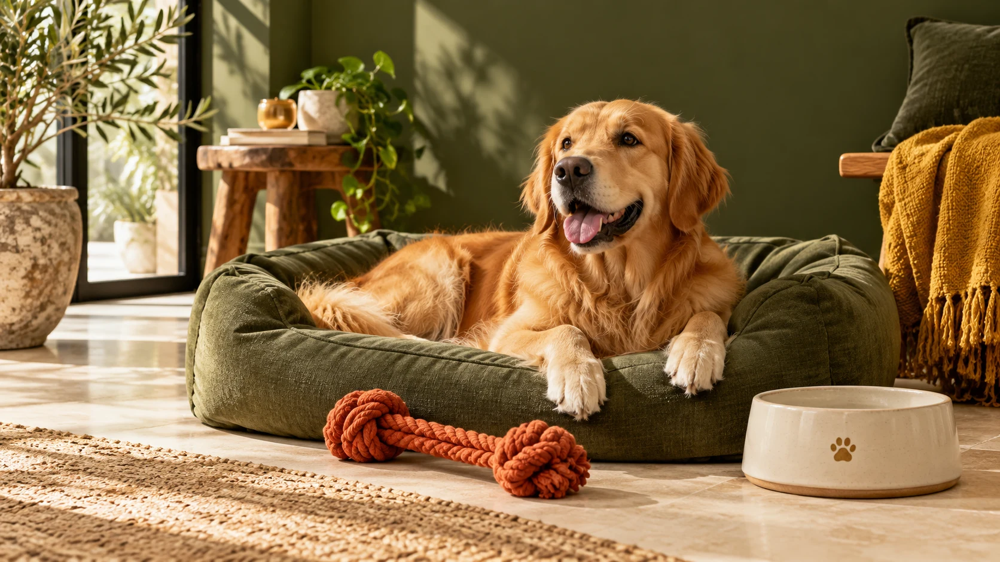

Choosing a cosy sleeping corner
Observe where your pet likes to settle, allow space to stretch and measure the area before choosing a bed. Compare the supplier’s actual dimensions with your available space.
Read the notes ↗Observe where your pet likes to settle, allow space to stretch and measure the area before choosing a bed. Compare the supplier’s actual dimensions with your available space.
Read the notes ↗Start with the basics: a comfortable sleeping space, suitable feeding bowls and a safe playtime option. A simple checklist helps keep your first shopping trip focused.
Read the notes ↗Choose a calm, practical spot where bowls can be cleaned and refilled easily. Check the capacity, material and care instructions of the actual product before ordering.
Read the notes ↗
Observe where your pet likes to settle, allow space to stretch and measure the area before choosing a bed. Compare the supplier’s actual dimensions with your available space.
Start with the basics: a comfortable sleeping space, suitable feeding bowls and a safe playtime option. A simple checklist helps keep your first shopping trip focused.
Choose a calm, practical spot where bowls can be cleaned and refilled easily. Check the capacity, material and care instructions of the actual product before ordering.
Original editorial notes for this showcase. Product-specific information must be verified with the live supplier.